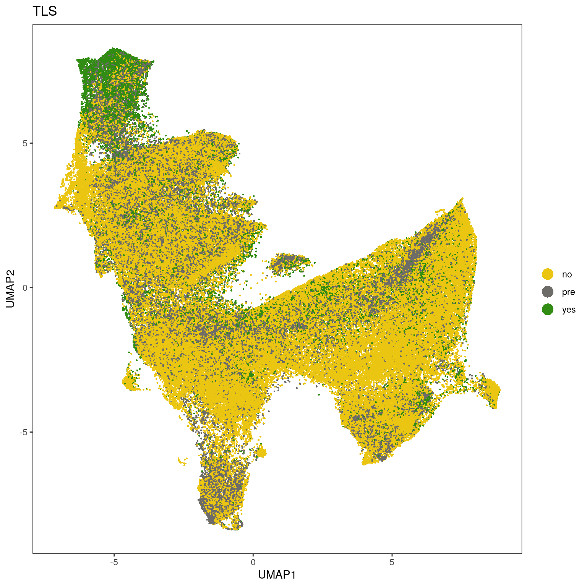
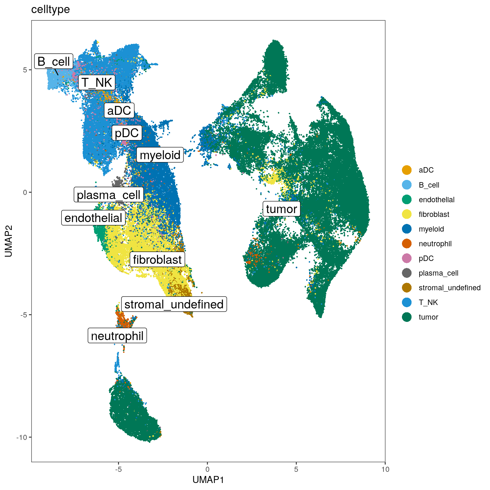
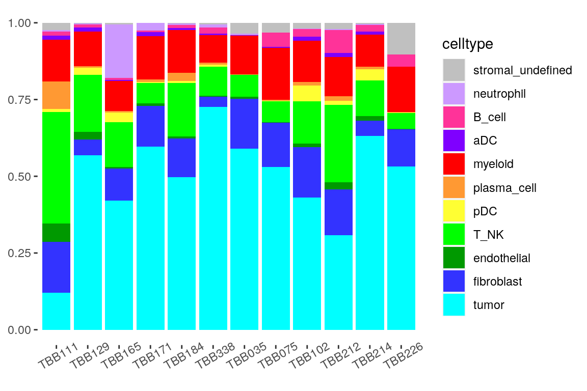
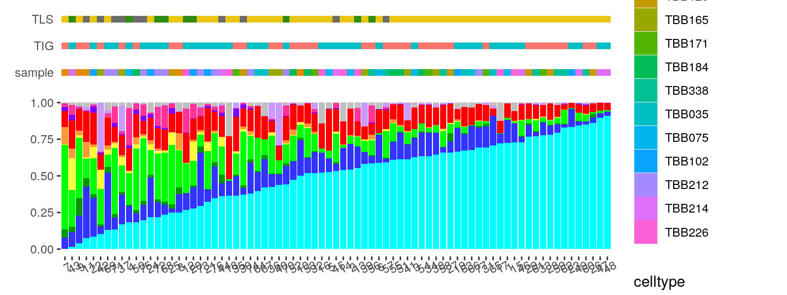

05_proteinPanel_StromalSubclustering
SandraTietscher
2020-10-23
Last updated: 2020-11-25
Checks: 7 0
Knit directory: BCexh_IMC/
This reproducible R Markdown analysis was created with workflowr (version 1.6.2). The Checks tab describes the reproducibility checks that were applied when the results were created. The Past versions tab lists the development history.
Great! Since the R Markdown file has been committed to the Git repository, you know the exact version of the code that produced these results.
Great job! The global environment was empty. Objects defined in the global environment can affect the analysis in your R Markdown file in unknown ways. For reproduciblity it’s best to always run the code in an empty environment.
The command set.seed(12345) was run prior to running the code in the R Markdown file. Setting a seed ensures that any results that rely on randomness, e.g. subsampling or permutations, are reproducible.
Great job! Recording the operating system, R version, and package versions is critical for reproducibility.
Nice! There were no cached chunks for this analysis, so you can be confident that you successfully produced the results during this run.
Great job! Using relative paths to the files within your workflowr project makes it easier to run your code on other machines.
Great! You are using Git for version control. Tracking code development and connecting the code version to the results is critical for reproducibility.
The results in this page were generated with repository version eb2c851. See the Past versions tab to see a history of the changes made to the R Markdown and HTML files.
Note that you need to be careful to ensure that all relevant files for the analysis have been committed to Git prior to generating the results (you can use wflow_publish or wflow_git_commit). workflowr only checks the R Markdown file, but you know if there are other scripts or data files that it depends on. Below is the status of the Git repository when the results were generated:
Ignored files:
Ignored: analysis/.Rhistory
Untracked files:
Untracked: CD11c_CD68_scatter.png
Untracked: Neighbourhood_TLS_relative.pdf
Untracked: Neighbourhood_TLS_relative.png
Untracked: Neighbourhood_all_relative.pdf
Untracked: Neighbourhood_all_relative.png
Untracked: analysis/13_proteinPanel_neighbourhood_extended.Rmd
Untracked: analysis/XX_RNApanel_neighbourhood.Rmd
Untracked: cytokine_environment.png
Untracked: data/RNAseq_Tcells.rds
Untracked: data/RNAseq_epithelial.rds
Untracked: data/ROI_info_HIER.csv
Untracked: data/ROI_info_RNAscope.csv
Untracked: data/cpout/
Untracked: data/masks/
Untracked: heatmap_markerexpression_myeloid_sub.png
Untracked: neighbourhood_myeloid_TIGdifference.png
Untracked: neighbourhood_myeloid_TLS_relative.png
Untracked: neighbourhood_myeloid_all_relative.png
Untracked: neighbourhood_myeloid_split_TLS.png
Untracked: output/ProteinPanel/
Untracked: output/RNApanel/
Untracked: output/TLS_score_25samples.png
Untracked: output/sce_ProteinPanel_afterQC.rds
Untracked: output/sce_ProteinPanel_initial.rds
Untracked: output/sce_ProteinPanel_initial_TLSrevised.rds
Untracked: output/sce_RNApanel_afterQC.rds
Untracked: output/sce_RNApanel_initial.rds
Untracked: output/sce_RNApanel_initial_TLSrevised.rds
Untracked: test.pdf
Untracked: test.png
Untracked: test_Treg_enrichment.png
Unstaged changes:
Modified: analysis/11_RNAscope_cytokine_communities.Rmd
Note that any generated files, e.g. HTML, png, CSS, etc., are not included in this status report because it is ok for generated content to have uncommitted changes.
These are the previous versions of the repository in which changes were made to the R Markdown (analysis/05_proteinPanel_StromalSubclustering.Rmd) and HTML (docs/05_proteinPanel_StromalSubclustering.html) files. If you’ve configured a remote Git repository (see ?wflow_git_remote), click on the hyperlinks in the table below to view the files as they were in that past version.
| File | Version | Author | Date | Message |
|---|---|---|---|---|
| Rmd | eb2c851 | SandraTietscher | 2020-11-25 | Update marker expression UMAP plots |
| html | 46de79d | SandraTietscher | 2020-11-25 | Build site. |
| Rmd | 30ad478 | SandraTietscher | 2020-11-25 | Figure updates for Supplemental Fig. S2 |
| html | 07fbe33 | SandraTietscher | 2020-11-06 | Build site. |
| Rmd | 11f3491 | SandraTietscher | 2020-11-06 | Minor plot changes |
| html | 2d8660b | SandraTietscher | 2020-11-02 | Build site. |
| html | 200dd71 | SandraTietscher | 2020-10-29 | Build site. |
| Rmd | 05a9ffe | SandraTietscher | 2020-10-29 | Better naming of intermediate files |
| html | b76baeb | SandraTietscher | 2020-10-28 | Build site. |
| html | 4b8f131 | SandraTietscher | 2020-10-26 | Build site. |
| Rmd | 9477c8c | SandraTietscher | 2020-10-26 | Small changes |
| html | 84af25e | SandraTietscher | 2020-10-26 | Build site. |
| Rmd | 1c5d81a | SandraTietscher | 2020-10-26 | Add script for stromal subclustering for Protein Panel. Compare cell type proportions across methods. |
Introduction
This script performs subclustering of stromal cells for the Protein panel. It further subclusters T/NK cells. Finally, it merges cell type labels back into the original object, resulting in the annotated full object.
Load libraries and data
# Load libraries
library(ggplot2)
library(SingleCellExperiment)
library(scater)
library(tidyverse)
library(dittoSeq)
library(viridis)
library(cowplot)
library(ggpubr)
library(scran)
library(plyr)
library(patchwork)
# Read SingleCellExperiment object (with stromal cells only)
sce_stromal <- readRDS(paste0(getwd(), "/output/ProteinPanel/sce_ProteinPanel_stroma.rds"))Stromal cell subclustering
Calculate UMAP on all stromal cells
markers_exclude_umap <- c("DNA1", "DNA2", "HH3", "LAG-3", "IDO1", "PD1", "Tim-3", "MMP9", "Granzyme_B", "CD274", "TCF7", "ICOS", "CAIX", "GITR", "Arginase", "CD40", "iNOS", "Cleaved_CP", "Ki-67", "E-cadherin", "panCK")
markers_include_umap <- rownames(assay(sce_stromal, "counts"))[! (rownames(assay(sce_stromal, "counts")) %in% markers_exclude_umap)]
sce_stromal <- runUMAP(sce_stromal, exprs_values = "exprs",
subset_row = rownames(assay(sce_stromal, "scaled")) %in% markers_include_umap)Visualize features on UMAP
dittoDimPlot(sce_stromal, var = "sample", reduction.use = "UMAP", size = 0.5,
color.panel = metadata(sce_stromal)$colour_vectors$sample, opacity = 0.2)
| Version | Author | Date |
|---|---|---|
| 84af25e | SandraTietscher | 2020-10-26 |
dittoDimPlot(sce_stromal, var = "sample", reduction.use = "UMAP", size = 0.5,
color.panel = metadata(sce_stromal)$colour_vectors$sample, split.by = "sample", opacity = 0.2)
| Version | Author | Date |
|---|---|---|
| 84af25e | SandraTietscher | 2020-10-26 |
dittoDimPlot(sce_stromal, var = "TIG", reduction.use = "UMAP", size = 0.5,
color.panel = metadata(sce_stromal)$colour_vectors$TIG)
| Version | Author | Date |
|---|---|---|
| 84af25e | SandraTietscher | 2020-10-26 |
dittoDimPlot(sce_stromal, var = "TLS", reduction.use = "UMAP", size = 0.5,
color.panel = metadata(sce_stromal)$colour_vectors$TLS)
Visualize marker expression on UMAP
# Plot expression of all markers
p.list <- list()
for(i in rownames(sce_stromal)){
p.list[[i]] <- plotUMAP(sce_stromal, colour_by = i, by_exprs_values = "scaled",
point_size = 0.5, point_alpha = 1, shape_by = "panel_type") + scale_colour_gradient2(name = i, low = "#2166ac", mid = "white", high = "#b2182b", limits = c(-3, 3), na.value = "#b2182b")
}
plot_grid(plotlist = p.list, ncol = 7)
| Version | Author | Date |
|---|---|---|
| 84af25e | SandraTietscher | 2020-10-26 |
Run graph-based clustering for stromal subset (Phenograph)
Display clusters on UMAP.
cluster_counts_stromal <- subset(assay(sce_stromal, "normalized"), rownames(assay(sce_stromal, "normalized")) %in% markers_include_umap)
g <- buildSNNGraph(cluster_counts_stromal, k=7)
clust <- igraph::cluster_louvain(g)$membership
table(clust)clust
1 2 3 4 5 6 7 8 9 10 11 12 13
11594 8514 8671 15542 10493 9624 20331 11303 7904 3402 9740 7071 9178
14 15 16 17 18 19 20 21 22 23
7813 7249 7937 18585 3168 9758 7946 5236 5493 2938 write.csv(table(clust), paste0(getwd(), "/output/ProteinPanel/stromal_cluster_cellnumbers.csv"), row.names = FALSE)
#add cluster information to sce object
sce_stromal$stromal_cluster <- as.factor(clust)
#plot on umap
dittoDimPlot(sce_stromal, var = "stromal_cluster", reduction.use = "UMAP", size = 0.2, do.label = TRUE, opacity = 0.2)
| Version | Author | Date |
|---|---|---|
| 84af25e | SandraTietscher | 2020-10-26 |
dittoDimPlot(sce_stromal, var = "stromal_cluster", reduction.use = "UMAP", size = 0.2, split.by = "stromal_cluster", opacity = 0.2)
| Version | Author | Date |
|---|---|---|
| 84af25e | SandraTietscher | 2020-10-26 |
Plot mean expression for each cluster
clustermean <- aggregateAcrossCells(sce_stromal, ids = DataFrame(cluster = sce_stromal$stromal_cluster), average = TRUE)
colnames(clustermean) <- clustermean$cluster
# Center and scale raw counts
assay(clustermean, "scaled") <- t(scale(t(assay(clustermean, "counts"))))
# Normalize raw counts
norm_counts <- t(apply(assay(clustermean, "counts"), 1, function(x)(x-min(x))/(max(x)-min(x))))
assay(clustermean, "normalized", withDimnames = FALSE) <- norm_counts
## Plot only relevant markers
exclude_plot <- c("DNA1", "DNA2", "HH3")
include_plot <- rownames(assay(sce_stromal, "counts"))[! (rownames(assay(sce_stromal, "counts")) %in% exclude_plot)]
## Plot
# Z-scaled
dittoHeatmap(clustermean[include_plot,], assay = "scaled", scale = "none",
heatmap.colors = magma(100),
cluster_cols = TRUE, show_colnames = TRUE,
breaks = seq(-3, 3, length.out = 101))
| Version | Author | Date |
|---|---|---|
| 84af25e | SandraTietscher | 2020-10-26 |
# Normalized (0-1)
dittoHeatmap(clustermean[include_plot,], assay = "normalized", scale = "none",
heatmap.colors = viridis(100),
cluster_cols = TRUE, show_colnames = TRUE)
| Version | Author | Date |
|---|---|---|
| 84af25e | SandraTietscher | 2020-10-26 |
Assign cell type labels
Manual cell type assignment based on canonical marker expression.
labels <- read.csv(paste0(getwd(), "/data/ProteinPanel_stromal_clusters.csv"))
label_list <- labels$class[match(sce_stromal$stromal_cluster, labels$cluster)]
sce_stromal$celltype <- label_list
# Plot on UMAP
dittoDimPlot(sce_stromal, var = "celltype", reduction.use = "UMAP", size = 0.5, opacity = 0.5, do.label = TRUE)
#Plot subtype proportions per sample
tab <- as.data.frame(prop.table(table(sce_stromal$sample, sce_stromal$celltype), margin = 1))
colnames(tab) <- c("sample", "celltype", "proportion")
ggplot(tab, aes(sample, y = proportion, fill=celltype)) +
geom_bar(stat="identity")+
theme(axis.title.x=element_blank(), axis.title.y = element_blank())+
theme(panel.background = element_blank(), axis.text.x = element_text(angle = 30))
| Version | Author | Date |
|---|---|---|
| 84af25e | SandraTietscher | 2020-10-26 |
Combine all celltype labels into full SCE object
# read in objects
sce_Protein <- readRDS(paste0(getwd(), "/output/ProteinPanel/sce_ProteinPanel_TS_assigned.rds"))
sce_Protein_sub <- readRDS(paste0(getwd(), "/output/ProteinPanel/sce_ProteinPanel_sub_UMAP.rds"))
## Prepare dataframe with cell IDs and celltype labels ##
# Tumor cells
tumor_ids <- as.data.frame(colnames(sce_Protein)[which(sce_Protein$cell_class == "tumor")])
colnames(tumor_ids) <- "cellID"
tumor_ids$celltype <- "tumor"
# Stromal cells without T/NK
stromal_ids <- data.frame(cellID = colnames(sce_stromal), celltype = sce_stromal$celltype)
# Combine
ids_table <- rbind(tumor_ids, stromal_ids)
# Add to full object
cellids_ordered <- as.data.frame(colnames(sce_Protein))
colnames(cellids_ordered)<- "cellID"
cellids_merged <- join(cellids_ordered, ids_table, by = "cellID")
sce_Protein$celltype <- cellids_merged$celltypePlot celltypes on UMAP
Use the randomly subset SCE object (120.000 cells).
# Assign cluster numbers to the right cells
sub_cellnames <- colnames(sce_Protein_sub)
celltype_sub <- sce_Protein[,sub_cellnames]$celltype
sce_Protein_sub$celltype <- celltype_sub
#plot on umap
dittoDimPlot(sce_Protein_sub, var = "celltype", reduction.use = "UMAP", size = 0.5, do.label = TRUE)
Plot expression heatmap with celltype labels
clustermean <- aggregateAcrossCells(sce_stromal, ids = DataFrame(cluster = sce_stromal$stromal_cluster), average = TRUE)
colnames(clustermean) <- clustermean$cluster
# Normalize raw counts
norm_counts <- t(apply(assay(clustermean, "counts"), 1, function(x)(x-min(x))/(max(x)-min(x))))
assay(clustermean, "normalized", withDimnames = FALSE) <- norm_counts
dittoHeatmap(clustermean[markers_include_umap,], assay = "normalized", scale = "none",
heatmap.colors = viridis(100),
cluster_cols = TRUE, show_colnames = TRUE, annot.by = "celltype", annot.colors =
c("#7F00FF", "#FF3399", "#009900", "#3333FF", "#FF0000", "#CC99FF", "#FFFF33", "#FF9933", "#C0C0C0", "#00FF00"))Plot celltype proportions per sample and per image
Include TLS and pre-TLS images.
celltype_colors = c(tumor = "#00FFFF",
fibroblast = "#3333FF",
endothelial = "#009900",
T_NK = "#00FF00",
pDC = "#FFFF33",
plasma_cell = "#FF9933",
myeloid = "#FF0000",
aDC = "#7F00FF",
B_cell = "#FF3399",
neutrophil = "#CC99FF",
stromal_undefined = "#C0C0C0"
)
# Plot cell type frequencies per sample
tab <- as.data.frame(prop.table(table(sce_Protein$sample, sce_Protein$celltype), margin = 1))
colnames(tab) <- c("sample", "celltype", "proportion")
tab$celltype <- factor(tab$celltype, levels = rev(names(celltype_colors)))
ggplot(tab, aes(sample, y = proportion, fill=celltype)) +
geom_bar(stat="identity")+
theme(axis.title.x=element_blank(), axis.title.y = element_blank())+
theme(panel.background = element_blank(), axis.text.x = element_text(angle = 30))+
scale_fill_manual(values = celltype_colors)
# Plot cell type frequencies per image
tab <- as.data.frame(prop.table(table(sce_Protein$ImageNumber, sce_Protein$celltype), margin = 1))
colnames(tab) <- c("image", "celltype", "proportion")
# Order images by tumor cell content
tumor_tab <- filter(tab, celltype == "tumor")
order <- tumor_tab[order(tumor_tab$proportion),]$image
tab$image <- factor(tab$image, levels = order)
tab$celltype <- factor(tab$celltype, levels = rev(names(celltype_colors)))
p_proportion <- ggplot(tab, aes(image, y = proportion, fill=celltype)) +
geom_bar(stat="identity")+
theme(axis.title.x=element_blank(), axis.title.y = element_blank())+
theme(panel.background = element_blank(), axis.text.x = element_text(angle = 30))+
scale_fill_manual(values = celltype_colors)
# Plot image metadata
ROI_info <- read.csv("data/ROI_info_HIER_TLSrevised.csv")
ROI_info$RNApanel_ImageNumber <- factor(ROI_info$RNApanel_ImageNumber, levels = order)
ROI_info$sample <- factor(ROI_info$sample, levels = levels(sce_stromal$sample))
p_sample <- ggplot(ROI_info, aes(x = RNApanel_ImageNumber, y = "sample", fill = sample))+
geom_tile()+
scale_fill_manual(values = metadata(sce_stromal)$colour_vectors$sample)+
theme(panel.background = element_blank(), axis.text.x = element_blank(), axis.title = element_blank(), axis.ticks = element_blank())
p_TLS <- ggplot(ROI_info, aes(x = RNApanel_ImageNumber, y = "TLS", fill = TLS))+
geom_tile()+
scale_fill_manual(values = metadata(sce_stromal)$colour_vectors$TLS)+
theme(panel.background = element_blank(), axis.text.x = element_blank(), axis.title = element_blank(), axis.ticks = element_blank())
p_TIG <- ggplot(ROI_info, aes(x = RNApanel_ImageNumber, y = "TIG", fill = TIG))+
geom_tile()+
scale_fill_manual(values = metadata(sce_stromal)$colour_vectors$TIG)+
theme(panel.background = element_blank(), axis.text.x = element_blank(), axis.title = element_blank(), axis.ticks = element_blank())
p_TLS/p_TIG/p_sample/p_proportion + plot_layout(heights = c(1,1,1,20), guides = "collect")
Compare celltype proportions per TIG
Exclude TLS and pre-TLS.
sce_TLSex <- sce_Protein[,which(sce_Protein$TLS == "no")]
tab <- as.data.frame(prop.table(table(sce_TLSex$sample, sce_TLSex$celltype), margin = 1))
colnames(tab) <- c("sample", "celltype", "proportion")
TIG2 <- c("TBB111", "TBB129", "TBB165", "TBB171", "TBB184", "TBB338")
tab$TIG <- ifelse(tab$sample %in% TIG2, "TIG2", "TIG3")
ggplot(tab, aes(x= TIG, y = proportion, color=TIG))+
geom_boxplot()+
geom_point()+
facet_wrap(~celltype, scales="fixed", ncol=6, strip.position="top")+
theme(axis.ticks.x = element_blank(),
axis.text.x=element_text(angle = 90, hjust=1),
axis.title.x = element_blank(),
panel.background = element_blank(),
panel.border = element_rect(color = "black", fill = NA, size = 1),
strip.background = element_blank(),
legend.background = element_blank())+
ylab("Of total [%]")+
stat_compare_means(method = "wilcox.test", aes(label=..p.format..), label.x.npc = "middle", label.y.npc = 0.9)
Save object
saveRDS(sce_Protein, "output/ProteinPanel/sce_ProteinPanel_celltypes.rds")Compare cell type proportions from CyTOF, RNAseq and IMC
Celltypes that were found in all three methods:
-epithelial
-endothelial
-T_NK
-myeloid (incl. dendritic cells)
-B cell
-plasma cell
-fibroblast
“Other” includes granulocytes, neutrophils, and “stromal_undefined” cell types.
For IMC data: include TLS and pre-TLS images.
Prepare tables
## Adapt IMC celltypes ##
sce_IMC <- sce_Protein
#sce_IMC <- sce_IMC[,which(sce_IMC$TLS == "no")]
sce_IMC$celltype <- factor(sce_IMC$celltype, levels=c("aDC", "B_cell", "endothelial", "fibroblast", "myeloid", "neutrophil", "pDC", "plasma_cell", "stromal_undefined", "T_NK", "tumor", "other"))
sce_IMC[,which(sce_IMC$celltype == "pDC")]$celltype <- "myeloid"
sce_IMC[,which(sce_IMC$celltype == "aDC")]$celltype <- "myeloid"
sce_IMC[,which(sce_IMC$celltype == "neutrophil")]$celltype <- "other"
sce_IMC[,which(sce_IMC$celltype == "stromal_undefined")]$celltype <- "other"
sce_IMC$celltype <- droplevels(sce_IMC$celltype)
IMC_perc <- as.data.frame(prop.table(x=table(sce_IMC$sample, sce_IMC$celltype), margin=1))
colnames(IMC_perc) <- c("sample", "celltype", "proportion")
IMC_perc$method <- "IMC"
IMC_perc$celltype <- gsub("tumor", "epithelial", IMC_perc$celltype)
# Remove sample not present in CyTOF
IMC_perc <- filter(IMC_perc, sample != "TBB338")
## Read in and adapt CyTOF celltypes ##
cytof_perc <- read.csv(paste0(getwd(), "/data/cytof_celltype_prop.csv"), row.names = 1)
cytof_perc["other",] <- cytof_perc["granulocyte",] + cytof_perc["other",]
cytof_perc["myeloid", ] <- cytof_perc["myeloid", ] + cytof_perc["dendritic cell", ]
cytof_perc <- cytof_perc[!(rownames(cytof_perc) %in% c("dendritic cell", "granulocyte")),]
rownames(cytof_perc) <- c("endothelial", "epithelial", "fibroblast", "B_cell", "plasma_cell", "myeloid", "other", "T_NK")
cytof_perc$celltype <- rownames(cytof_perc)
cytof_perc <- pivot_longer(cytof_perc, 1:12, names_to = "sample", values_to = "proportion")
cytof_perc$method <- "CyTOF"
cytof_perc <- cytof_perc[,c(2,1,3,4)]
# Remove sample not present in IMC
cytof_perc <- filter(cytof_perc, sample != "TBB011")
## Read in and adapt RNA-seq celltypes ##
RNAseq_perc <- read.csv(paste0(getwd(), "/data/RNAseq_celltype_prop.csv"))
# Remove samples not present in CyTOF or IMC
RNAseq_perc <- filter(RNAseq_perc, !(sample == "TBB338" | sample == "TBB011" | sample == "TBB330"))
RNAseq_perc <- pivot_longer(RNAseq_perc, 2:9, names_to = "celltype", values_to = "proportion")
RNAseq_perc$method <- "RNAseq"
# Combine
celltype_perc <- rbind(IMC_perc, cytof_perc, RNAseq_perc)
celltype_perc$method <- factor(celltype_perc$method, levels = c("IMC", "CyTOF", "RNAseq"))Plot
# Plot
ggplot(celltype_perc, aes(method, y = proportion, fill=celltype)) +
geom_bar(stat="identity")+
facet_wrap(~sample, ncol=6)+
theme(axis.title.x=element_blank(), axis.title.y = element_blank())+
theme(panel.background = element_blank(), axis.text.x = element_text(angle = 30))
| Version | Author | Date |
|---|---|---|
| 84af25e | SandraTietscher | 2020-10-26 |
# Plot
ggplot(celltype_perc, aes(x = method, y = proportion)) +
geom_line(aes(group = sample, color = sample))+
scale_color_manual(values = sce_IMC@metadata$colour_vectors$sample)+
facet_wrap(~celltype, scales = "free", ncol = 4)+
theme(axis.title.x = element_blank(),
axis.text.x = element_text(angle = 30),
panel.background = element_blank(),
strip.background = element_blank(),
legend.background = element_blank(),
panel.border = element_rect(color = "black", fill = NA, size = 1))
# IMC-RNAseq comparison
ggplot(celltype_perc[which(celltype_perc$method != "CyTOF"),], aes(x = method, y = proportion)) +
geom_line(aes(group = sample, color = sample))+
facet_wrap(~celltype, scales = "free", ncol = 4)+
theme(axis.title.x = element_blank(),
axis.text.x = element_text(angle = 30),
panel.background = element_blank(),
strip.background = element_blank(),
legend.background = element_blank(),
panel.border = element_rect(color = "black", fill = NA, size = 1))
| Version | Author | Date |
|---|---|---|
| 84af25e | SandraTietscher | 2020-10-26 |
# IMC-CyTOF comparison
ggplot(celltype_perc[which(celltype_perc$method != "RNAseq"),], aes(x = method, y = proportion)) +
geom_line(aes(group = sample, color = sample))+
facet_wrap(~celltype, scales = "free", ncol = 4)+
theme(axis.title.x = element_blank(),
axis.text.x = element_text(angle = 30),
panel.background = element_blank(),
strip.background = element_blank(),
legend.background = element_blank(),
panel.border = element_rect(color = "black", fill = NA, size = 1))
| Version | Author | Date |
|---|---|---|
| 84af25e | SandraTietscher | 2020-10-26 |
Compare cell type proportions of the two panels
sce_RNA <- readRDS("output/RNApanel/sce_RNApanel_celltypes.rds")
sce_RNA[,which(sce_RNA$celltype %in% c("stromal_SMA+", "stromal_undefined"))]$celltype <- "stromal"
sce_RNA[,which(sce_RNA$celltype == "Bcell")]$celltype <- "B_cell"
sce_RNA[,which(sce_RNA$celltype %in% c("NK", "T_CD4", "T_CD8"))]$celltype <- "T_NK"
sce_Protein[,which(sce_Protein$celltype %in% c("fibroblast", "stromal_undefined", "plasma_cell", "pDC"))]$celltype <- "stromal"
tab_protein <- as.data.frame(prop.table(table(sce_Protein$ImageNumber, sce_Protein$celltype), margin = 1))
tab_protein$panel <- "protein_panel"
tab_RNA <- as.data.frame(prop.table(table(sce_RNA$ImageNumber, sce_RNA$celltype), margin = 1))
tab_RNA$panel <- "RNA_panel"
tab_comb <- rbind(tab_protein, tab_RNA)
colnames(tab_comb) <- c("ImageNumber", "celltype", "proportion", "panel")
# Plot
ggplot(tab_comb, aes(panel, y = proportion, fill=celltype)) +
geom_bar(stat="identity")+
facet_wrap(~ImageNumber, ncol = 20)+
theme(axis.title.x=element_blank(), axis.title.y = element_blank())+
theme(panel.background = element_blank(), axis.text.x = element_text(angle = 30))
| Version | Author | Date |
|---|---|---|
| 46de79d | SandraTietscher | 2020-11-25 |
tab_protein <- as.data.frame(prop.table(table(sce_Protein$sample, sce_Protein$celltype), margin = 1))
tab_protein$panel <- "protein_panel"
tab_RNA <- as.data.frame(prop.table(table(sce_RNA$sample, sce_RNA$celltype), margin = 1))
tab_RNA$panel <- "RNA_panel"
tab_comb <- rbind(tab_protein, tab_RNA)
colnames(tab_comb) <- c("sample", "celltype", "proportion", "panel")
# Plot
ggplot(tab_comb, aes(panel, y = proportion, fill=celltype)) +
geom_bar(stat="identity")+
facet_wrap(~sample, ncol = 20)+
theme(axis.title.x=element_blank(), axis.title.y = element_blank())+
theme(panel.background = element_blank(), axis.text.x = element_text(angle = 30))
| Version | Author | Date |
|---|---|---|
| 46de79d | SandraTietscher | 2020-11-25 |
sessionInfo()R version 4.0.2 (2020-06-22)
Platform: x86_64-pc-linux-gnu (64-bit)
Running under: Ubuntu 20.04 LTS
Matrix products: default
BLAS/LAPACK: /usr/lib/x86_64-linux-gnu/openblas-openmp/libopenblasp-r0.3.8.so
locale:
[1] LC_CTYPE=en_US.UTF-8 LC_NUMERIC=C
[3] LC_TIME=en_US.UTF-8 LC_COLLATE=en_US.UTF-8
[5] LC_MONETARY=en_US.UTF-8 LC_MESSAGES=C
[7] LC_PAPER=en_US.UTF-8 LC_NAME=C
[9] LC_ADDRESS=C LC_TELEPHONE=C
[11] LC_MEASUREMENT=en_US.UTF-8 LC_IDENTIFICATION=C
attached base packages:
[1] parallel stats4 stats graphics grDevices utils datasets
[8] methods base
other attached packages:
[1] patchwork_1.0.1 plyr_1.8.6
[3] scran_1.16.0 ggpubr_0.4.0
[5] cowplot_1.0.0 viridis_0.5.1
[7] viridisLite_0.3.0 dittoSeq_1.0.2
[9] forcats_0.5.0 stringr_1.4.0
[11] dplyr_1.0.1 purrr_0.3.4
[13] readr_1.3.1 tidyr_1.1.1
[15] tibble_3.0.3 tidyverse_1.3.0
[17] scater_1.16.2 SingleCellExperiment_1.10.1
[19] SummarizedExperiment_1.18.2 DelayedArray_0.14.1
[21] matrixStats_0.56.0 Biobase_2.48.0
[23] GenomicRanges_1.40.0 GenomeInfoDb_1.24.2
[25] IRanges_2.22.2 S4Vectors_0.26.1
[27] BiocGenerics_0.34.0 ggplot2_3.3.2
[29] workflowr_1.6.2
loaded via a namespace (and not attached):
[1] ggbeeswarm_0.6.0 colorspace_1.4-1
[3] ggsignif_0.6.0 rio_0.5.16
[5] ellipsis_0.3.1 ggridges_0.5.2
[7] rprojroot_1.3-2 XVector_0.28.0
[9] BiocNeighbors_1.6.0 fs_1.5.0
[11] rstudioapi_0.11 farver_2.0.3
[13] ggrepel_0.8.2 RSpectra_0.16-0
[15] fansi_0.4.1 lubridate_1.7.9
[17] xml2_1.3.2 codetools_0.2-16
[19] knitr_1.29 jsonlite_1.7.0
[21] broom_0.7.0 dbplyr_1.4.4
[23] uwot_0.1.8 pheatmap_1.0.12
[25] compiler_4.0.2 httr_1.4.2
[27] dqrng_0.2.1 backports_1.1.8
[29] assertthat_0.2.1 Matrix_1.2-18
[31] limma_3.44.3 cli_2.0.2
[33] later_1.1.0.1 BiocSingular_1.4.0
[35] htmltools_0.5.0 tools_4.0.2
[37] igraph_1.2.5 rsvd_1.0.3
[39] gtable_0.3.0 glue_1.4.1
[41] GenomeInfoDbData_1.2.3 Rcpp_1.0.5
[43] carData_3.0-4 cellranger_1.1.0
[45] vctrs_0.3.2 DelayedMatrixStats_1.10.1
[47] xfun_0.16 openxlsx_4.1.5
[49] rvest_0.3.6 lifecycle_0.2.0
[51] irlba_2.3.3 statmod_1.4.34
[53] rstatix_0.6.0 edgeR_3.30.3
[55] zlibbioc_1.34.0 scales_1.1.1
[57] hms_0.5.3 promises_1.1.1
[59] RColorBrewer_1.1-2 curl_4.3
[61] yaml_2.2.1 gridExtra_2.3
[63] stringi_1.4.6 zip_2.0.4
[65] BiocParallel_1.22.0 rlang_0.4.7
[67] pkgconfig_2.0.3 bitops_1.0-6
[69] evaluate_0.14 lattice_0.20-41
[71] labeling_0.3 tidyselect_1.1.0
[73] RcppAnnoy_0.0.16 magrittr_1.5
[75] R6_2.4.1 generics_0.0.2
[77] DBI_1.1.0 foreign_0.8-80
[79] pillar_1.4.6 haven_2.3.1
[81] whisker_0.4 withr_2.2.0
[83] abind_1.4-5 RCurl_1.98-1.2
[85] car_3.0-8 modelr_0.1.8
[87] crayon_1.3.4 rmarkdown_2.3
[89] locfit_1.5-9.4 grid_4.0.2
[91] readxl_1.3.1 data.table_1.13.0
[93] blob_1.2.1 git2r_0.27.1
[95] reprex_0.3.0 digest_0.6.25
[97] httpuv_1.5.4 munsell_0.5.0
[99] beeswarm_0.2.3 vipor_0.4.5